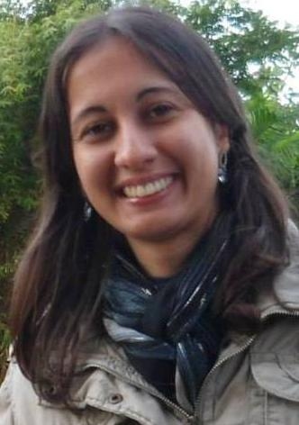

Artificial Intelligence Analyst | Instituto Hardware BR (HBR)
Campinas, SP, Brazil (remote).
Senior AI & Computer Vision Engineer. 10+ years across industrial applications and medical imaging, building end-to-end deep learning solutions from data to production inference.

Senior AI & Computer Vision Engineer with a Ph.D. and 10+ years of experience across industrial applications and medical imaging. I build end-to-end deep learning solutions (image classification, object detection, instance and semantic segmentation, tracking and OCR), complemented by classical image processing and model optimization for production inference with ONNX, TensorRT and NVIDIA Triton.
My background combines research (FAPESP fellowships and international research at the University of Pittsburgh, USA) with hands-on delivery of computer vision systems to the market for industrial safety, quality control and diagnostic support. I am also an experienced university lecturer and mentor.
Campinas, SP, Brazil (remote).
End-to-end computer vision and deep learning solutions in Python and PyTorch for industrial challenges (remote).
São Carlos, SP, Brazil.
Campinas, SP, Brazil.
Turns a photo of a food package into structured nutrition data. Fourteen interchangeable OCR engines, from Tesseract and PaddleOCR to vision-language OCR models such as olmOCR and GLM-OCR, feed a layout-aware extractor that handles per-100 g and per-serving columns, EU and US formats, 15+ languages and rotated photos. Nutritional sanity rules catch typical OCR slips, and every engine is compared on a benchmark of real Open Food Facts photos. Includes a CLI, a local web interface, a Python API and Docker.
Checks personal protective equipment in video. Paired-class YOLO models detect each item as worn or not worn (hardhat, vest, gloves, goggles, mask), a tracker follows each worker, and a 3-second majority vote confirms violations before a box turns red, filtering out flicker. A vision-language model (SmolVLM or Idefics2) then double-checks each flagged worker's crop, for human review.
Raises alerts when a person falls in video. YOLO11-pose keypoints and tracking feed a per-person state machine (upright, falling, fallen, alert) driven by torso angle, body aspect ratio and hip velocity, with a hold time to avoid false alarms. Tested on a mix of GMDCSA24 falls and outdoor clips; no training needed and it runs on CPU.
Raises alerts when pedestrians get close to cars, buses or trucks in video. It combines YOLO tracking with Depth Anything V2 monocular depth: a 2D distance gate scaled by person height, a relative depth gate, a time-window vote per person, and filtering of cyclists and motorcyclists.
Counts people and vehicles that cross lines drawn by the user on the video, separated by direction (IN/OUT). Crossings use a strict segment-intersection test on tracked trajectories, each ID is counted once per line, and faces can optionally be blurred in the output.
Builds a decaying spatial heatmap of where people walk, side by side with the tracking view, and reports current occupancy, peak occupancy and unique tracked people. Useful for studying flow and hotspots in public spaces.
Experiments on localizing lung opacities in chest X-rays using YOLOv5 and YOLOX detectors fused with Weighted Boxes Fusion, plus a transfer-learning CNN classifier. Includes preprocessing, training, ensemble and mAP evaluation notebooks. Companion code for the article published in Big Data and Cognitive Computing (2024). Research code, not for clinical use.
Experiments in detecting small people and estimating their pose in high-resolution video using YOLOv8. It compares overlapping sliding-window inference with NMS merging and a detect-then-crop two-stage approach, with optional SORT tracking.
A Python tool that detects people in video with an Ultralytics YOLO model and follows them across frames using one of seven OpenCV trackers. Detections are matched to tracks by bounding-box IoU, and the output video shows each track with a persistent ID. Thresholds and track lifetime are exposed as command-line arguments.
Two small desktop tools for picking frames. A video player built with OpenCV and Tkinter steps through a video and saves the current frame as JPEG. An image viewer built with Pillow lets you browse a folder of images and copy the selected ones to an output folder.
Journal of Sensor and Actuator Networks, v. 14, art. 10 · doi:10.3390/jsan14010010
Big Data and Cognitive Computing, v. 8, art. 84 · doi:10.3390/bdcc8080084
European Journal of Radiology, v. 131, art. 109197 · doi:10.1016/j.ejrad.2020.109197
European Radiology Experimental, v. 3, art. 34 · doi:10.1186/s41747-019-0112-7
Technology in Cancer Research & Treatment, v. 17 · doi:10.1177/1533033818763461
Bioengineering (Basel), v. 5, art. 62 · doi:10.3390/bioengineering5030062
International Journal of Biomedical Imaging, v. 2016, pp. 1–13 · doi:10.1155/2016/7987212
Full list on Google Scholar, ORCID and Lattes.
Research scholar visitor at the University of Pittsburgh (USA), Sep 2015 – Nov 2016.